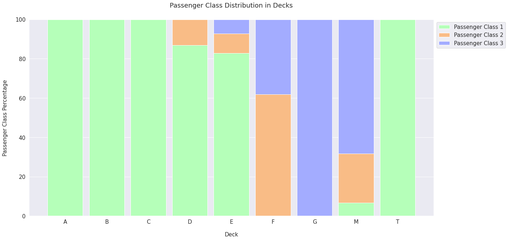
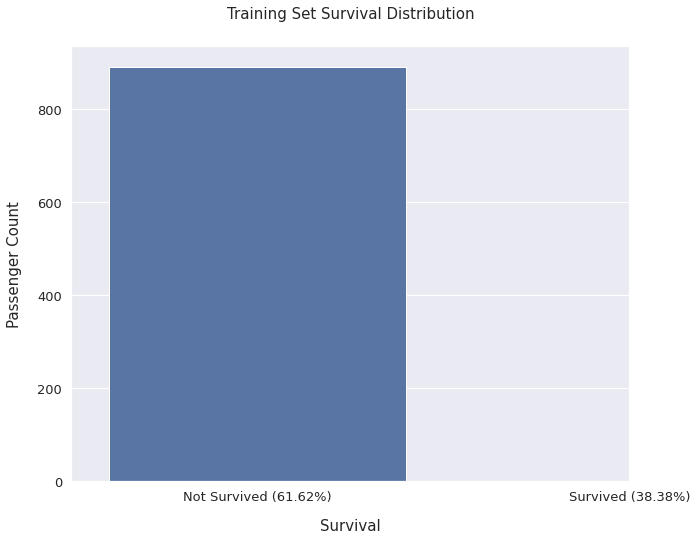
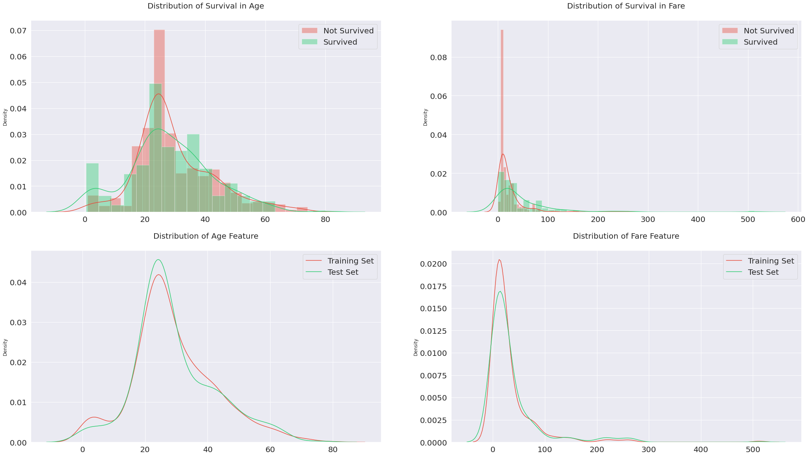
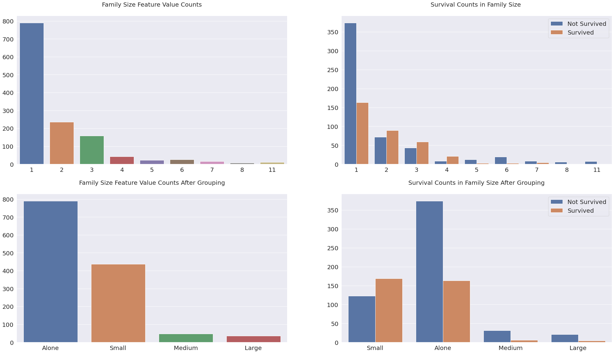
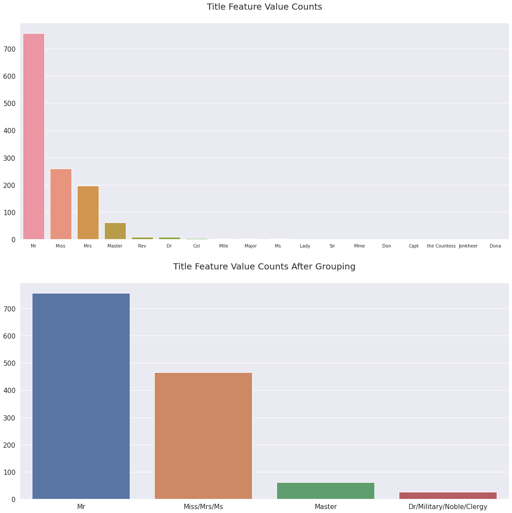

I decided to write this kernel because Titanic: Machine Learning from Disaster is one of my favorite competitions on Kaggle. This is a beginner level kernel which focuses on Exploratory Data Analysis and Feature Engineering. A lot of people start Kaggle with this competition and they get lost in extremely long tutorial kernels. This is a short kernel compared to the other ones. I hope this will be a good guide for starters and inspire them with new feature engineering ideas.
Titanic: Machine Learning from Disaster is a great competition to apply domain knowledge for feature engineering, so I made a research and learned a lot about Titanic. There are many secrets to be revealed beneath the Titanic dataset. I tried to find out some of those secret factors that had affected the survival of passengers when the Titanic was sinking. I believe there are other features still waiting to be discovered.
This kernel has 3 main sections; Exploratory Data Analysis, Feature Engineering and Model, and it can achieve top 2% (0.83732) public leaderboard score with a tuned Random Forest Classifier. It takes 60 seconds to run whole notebook. If you have any idea that might improve this kernel, please be sure to comment, or fork and experiment as you like. If you didn’t understand any part, feel free to ask.
def concat_df(train_data, test_data):# Returns a concatenated df of training and test setreturn pd.concat([train_data, test_data], sort=True).reset_index(drop=True)def divide_df(all_data):# Returns divided dfs of training and test setreturn all_data.loc[:890], all_data.loc[891:].drop(['Survived'], axis=1)df_train = pd.read_csv('titanic/train.csv')df_test = pd.read_csv('titanic/test.csv')df_all = concat_df(df_train, df_test)df_train.name ='Training Set'df_test.name ='Test Set'df_all.name ='All Set'dfs = [df_train, df_test]print('Number of Training Examples = {}'.format(df_train.shape[0]))print('Number of Test Examples = {}\n'.format(df_test.shape[0]))print('Training X Shape = {}'.format(df_train.shape))print('Training y Shape = {}\n'.format(df_train['Survived'].shape[0]))print('Test X Shape = {}'.format(df_test.shape))print('Test y Shape = {}\n'.format(df_test.shape[0]))print(df_train.columns)print(df_test.columns)
Number of Training Examples = 891
Number of Test Examples = 418
Training X Shape = (891, 12)
Training y Shape = 891
Test X Shape = (418, 11)
Test y Shape = 418
Index(['PassengerId', 'Survived', 'Pclass', 'Name', 'Sex', 'Age', 'SibSp',
'Parch', 'Ticket', 'Fare', 'Cabin', 'Embarked'],
dtype='object')
Index(['PassengerId', 'Pclass', 'Name', 'Sex', 'Age', 'SibSp', 'Parch',
'Ticket', 'Fare', 'Cabin', 'Embarked'],
dtype='object')
:::
1. Exploratory Data Analysis
1.1 Overview
PassengerId is the unique id of the row and it doesn’t have any effect on target
Survived is the target variable we are trying to predict (0 or 1):
1 = Survived
0 = Not Survived
Pclass (Passenger Class) is the socio-economic status of the passenger and it is a categorical ordinal feature which has 3 unique values (1, 2 or 3):
1 = Upper Class
2 = Middle Class
3 = Lower Class
Name, Sex and Age are self-explanatory
SibSp is the total number of the passengers’ siblings and spouse
Parch is the total number of the passengers’ parents and children
Ticket is the ticket number of the passenger
Fare is the passenger fare
Cabin is the cabin number of the passenger
Embarked is port of embarkation and it is a categorical feature which has 3 unique values (C, Q or S):
As seen from below, some columns have missing values. display_missing function shows the count of missing values in every column in both training and test set. * Training set have missing values in Age, Cabin and Embarked columns * Test set have missing values in Age, Cabin and Fare columns
It is convenient to work on concatenated training and test set while dealing with missing values, otherwise filled data may overfit to training or test set samples. The count of missing values in Age, Embarked and Fare are smaller compared to total sample, but roughly 80% of the Cabin is missing. Missing values in Age, Embarked and Fare can be filled with descriptive statistical measures but that wouldn’t work for Cabin.
def display_missing(df): for col in df.columns.tolist(): print('{} column missing values: {}'.format(col, df[col].isnull().sum()))print('\n')for df in dfs:print('{}'.format(df.name)) display_missing(df)
Training Set
PassengerId column missing values: 0
Survived column missing values: 0
Pclass column missing values: 0
Name column missing values: 0
Sex column missing values: 0
Age column missing values: 177
SibSp column missing values: 0
Parch column missing values: 0
Ticket column missing values: 0
Fare column missing values: 0
Cabin column missing values: 687
Embarked column missing values: 2
Test Set
PassengerId column missing values: 0
Pclass column missing values: 0
Name column missing values: 0
Sex column missing values: 0
Age column missing values: 86
SibSp column missing values: 0
Parch column missing values: 0
Ticket column missing values: 0
Fare column missing values: 1
Cabin column missing values: 327
Embarked column missing values: 0
:::
1.2.1 Age
Missing values in Age are filled with median age, but using median age of the whole data set is not a good choice. Median age of Pclass groups is the best choice because of its high correlation with Age(0.408106) and Survived(0.338481). It is also more logical to group ages by passenger classes instead of other features.
In order to be more accurate, Sex feature is used as the second level of groupby while filling the missing Age values. As seen from below, Pclass and Sex groups have distinct median Age values. When passenger class increases, the median age for both males and females also increases. However, females tend to have slightly lower median Age than males. The median ages below are used for filling the missing values in Age feature.
age_by_pclass_sex = df_all.groupby(['Sex', 'Pclass']).median()['Age']for pclass inrange(1, 4):for sex in ['female', 'male']:print('Median age of Pclass {}{}s: {}'.format(pclass, sex, age_by_pclass_sex[sex][pclass]))print('Median age of all passengers: {}'.format(df_all['Age'].median()))# Filling the missing values in Age with the medians of Sex and Pclass groupsdf_all['Age'] = df_all.groupby(['Sex', 'Pclass'])['Age'].apply(lambda x: x.fillna(x.median()))
Median age of Pclass 1 females: 36.0
Median age of Pclass 1 males: 42.0
Median age of Pclass 2 females: 28.0
Median age of Pclass 2 males: 29.5
Median age of Pclass 3 females: 22.0
Median age of Pclass 3 males: 25.0
Median age of all passengers: 28.0
1.2.2 Embarked
Embarked is a categorical feature and there are only 2 missing values in whole data set. Both of those passengers are female, upper class and they have the same ticket number. This means that they know each other and embarked from the same port together. The mode Embarked value for an upper class female passenger is C (Cherbourg), but this doesn’t necessarily mean that they embarked from that port.
When I googled Stone, Mrs. George Nelson (Martha Evelyn), I found that she embarked from S (Southampton) with her maid Amelie Icard, in this page Martha Evelyn Stone: Titanic Survivor.
Mrs Stone boarded the Titanic in Southampton on 10 April 1912 and was travelling in first class with her maid Amelie Icard. She occupied cabin B-28.
Missing values in Embarked are filled with S with this information.
# Filling the missing values in Embarked with Sdf_all['Embarked'] = df_all['Embarked'].fillna('S')
1.2.3 Fare
There is only one passenger with missing Fare value. We can assume that Fare is related to family size (Parch and SibSp) and Pclass features. Median Fare value of a male with a third class ticket and no family is a logical choice to fill the missing value.
med_fare = df_all.groupby(['Pclass', 'Parch', 'SibSp']).Fare.median()[3][0][0]# Filling the missing value in Fare with the median Fare of 3rd class alone passengerdf_all['Fare'] = df_all['Fare'].fillna(med_fare)
1.2.4 Cabin
Cabin feature is little bit tricky and it needs further exploration. The large portion of the Cabin feature is missing and the feature itself can’t be ignored completely because some the cabins might have higher survival rates. It turns out to be the first letter of the Cabin values are the decks in which the cabins are located. Those decks were mainly separated for one passenger class, but some of them were used by multiple passenger classes. * On the Boat Deck there were 6 rooms labeled as T, U, W, X, Y, Z but only the T cabin is present in the dataset * A, B and C decks were only for 1st class passengers * D and E decks were for all classes * F and G decks were for both 2nd and 3rd class passengers * From going A to G, distance to the staircase increases which might be a factor of survival
# Creating Deck column from the first letter of the Cabin column (M stands for Missing)df_all['Deck'] = df_all['Cabin'].apply(lambda s: s[0] if pd.notnull(s) else'M')df_all_decks = df_all.groupby(['Deck', 'Pclass']).count().drop(columns=['Survived', 'Sex', 'Age', 'SibSp', 'Parch', 'Fare', 'Embarked', 'Cabin', 'PassengerId', 'Ticket']).rename(columns={'Name': 'Count'}).transpose()def get_pclass_dist(df):# Creating a dictionary for every passenger class count in every deck deck_counts = {'A': {}, 'B': {}, 'C': {}, 'D': {}, 'E': {}, 'F': {}, 'G': {}, 'M': {}, 'T': {}} decks = df.columns.levels[0] for deck in decks:for pclass inrange(1, 4):try: count = df[deck][pclass][0] deck_counts[deck][pclass] = count exceptKeyError: deck_counts[deck][pclass] =0 df_decks = pd.DataFrame(deck_counts) deck_percentages = {}# Creating a dictionary for every passenger class percentage in every deckfor col in df_decks.columns: deck_percentages[col] = [(count / df_decks[col].sum()) *100for count in df_decks[col]]return deck_counts, deck_percentagesdef display_pclass_dist(percentages): df_percentages = pd.DataFrame(percentages).transpose() deck_names = ('A', 'B', 'C', 'D', 'E', 'F', 'G', 'M', 'T') bar_count = np.arange(len(deck_names)) bar_width =0.85 pclass1 = df_percentages[0] pclass2 = df_percentages[1] pclass3 = df_percentages[2] plt.figure(figsize=(20, 10)) plt.bar(bar_count, pclass1, color='#b5ffb9', edgecolor='white', width=bar_width, label='Passenger Class 1') plt.bar(bar_count, pclass2, bottom=pclass1, color='#f9bc86', edgecolor='white', width=bar_width, label='Passenger Class 2') plt.bar(bar_count, pclass3, bottom=pclass1 + pclass2, color='#a3acff', edgecolor='white', width=bar_width, label='Passenger Class 3') plt.xlabel('Deck', size=15, labelpad=20) plt.ylabel('Passenger Class Percentage', size=15, labelpad=20) plt.xticks(bar_count, deck_names) plt.tick_params(axis='x', labelsize=15) plt.tick_params(axis='y', labelsize=15) plt.legend(loc='upper left', bbox_to_anchor=(1, 1), prop={'size': 15}) plt.title('Passenger Class Distribution in Decks', size=18, y=1.05) plt.show() all_deck_count, all_deck_per = get_pclass_dist(df_all_decks)display_pclass_dist(all_deck_per)

:::
100% of A, B and C decks are 1st class passengers
Deck D has 87% 1st class and 13% 2nd class passengers
Deck E has 83% 1st class, 10% 2nd class and 7% 3rd class passengers
Deck F has 62% 2nd class and 38% 3rd class passengers
100% of G deck are 3rd class passengers
There is one person on the boat deck in T cabin and he is a 1st class passenger. T cabin passenger has the closest resemblance to A deck passengers so he is grouped with A deck
Passengers labeled as M are the missing values in Cabin feature. I don’t think it is possible to find those passengers’ real Deck so I decided to use M like a deck
# Passenger in the T deck is changed to Aidx = df_all[df_all['Deck'] =='T'].indexdf_all.loc[idx, 'Deck'] ='A'
As I suspected, every deck has different survival rates and that information can’t be discarded. Deck B, C, D and E have the highest survival rates. Those decks are mostly occupied by 1st class passengers. M has the lowest survival rate which is mostly occupied by 2nd and 3rd class passengers. To conclude, cabins used by 1st class passengers have higher survival rates than cabins used by 2nd and 3rd class passengers. In my opinion M (Missing Cabin values) has the lowest survival rate because they couldn’t retrieve the cabin data of the victims. That’s why I believe labeling that group as M is a reasonable way to handle the missing data. It is a unique group with shared characteristics. Deck feature has high-cardinality right now so some of the values are grouped with each other based on their similarities. * A, B and C decks are labeled as ABC because all of them have only 1st class passengers * D and E decks are labeled as DE because both of them have similar passenger class distribution and same survival rate * F and G decks are labeled as FG because of the same reason above * M deck doesn’t need to be grouped with other decks because it is very different from others and has the lowest survival rate.
M 1014
ABC 182
DE 87
FG 26
Name: Deck, dtype: int64
After filling the missing values in Age, Embarked, Fare and Deck features, there is no missing value left in both training and test set. Cabin is dropped because Deck feature is used instead of it.
survived = df_train['Survived'].value_counts()[1]not_survived = df_train['Survived'].value_counts()[0]survived_per = survived / df_train.shape[0] *100not_survived_per = not_survived / df_train.shape[0] *100print('{} of {} passengers survived and it is the {:.2f}% of the training set.'.format(survived, df_train.shape[0], survived_per))print('{} of {} passengers didnt survive and it is the {:.2f}% of the training set.'.format(not_survived, df_train.shape[0], not_survived_per))plt.figure(figsize=(10, 8))sns.countplot(df_train['Survived'])plt.xlabel('Survival', size=15, labelpad=15)plt.ylabel('Passenger Count', size=15, labelpad=15)plt.xticks((0, 1), ['Not Survived ({0:.2f}%)'.format(not_survived_per), 'Survived ({0:.2f}%)'.format(survived_per)])plt.tick_params(axis='x', labelsize=13)plt.tick_params(axis='y', labelsize=13)plt.title('Training Set Survival Distribution', size=15, y=1.05)plt.show()
342 of 891 passengers survived and it is the 38.38% of the training set.
549 of 891 passengers didnt survive and it is the 61.62% of the training set.

:::
1.4 Correlations
Features are highly correlated with each other and dependent to each other. The highest correlation between features is 0.549500 in training set and 0.577147 in test set (between Fare and Pclass). The other features are also highly correlated. There are 9 correlations in training set and 6 correlations in test set that are higher than 0.1.
Both of the continuous features (Age and Fare) have good split points and spikes for a decision tree to learn. One potential problem for both features is, the distribution has more spikes and bumps in training set, but it is smoother in test set. Model may not be able to generalize to test set because of this reason.
Distribution of Age feature clearly shows that children younger than 15 has a higher survival rate than any of the other age groups
In distribution of Fare feature, the survival rate is higher on distribution tails. The distribution also has positive skew because of the extremely large outliers
cont_features = ['Age', 'Fare']surv = df_train['Survived'] ==1fig, axs = plt.subplots(ncols=2, nrows=2, figsize=(20, 20))plt.subplots_adjust(right=1.5)for i, feature inenumerate(cont_features): # Distribution of survival in feature sns.distplot(df_train[~surv][feature], label='Not Survived', hist=True, color='#e74c3c', ax=axs[0][i]) sns.distplot(df_train[surv][feature], label='Survived', hist=True, color='#2ecc71', ax=axs[0][i])# Distribution of feature in dataset sns.distplot(df_train[feature], label='Training Set', hist=False, color='#e74c3c', ax=axs[1][i]) sns.distplot(df_test[feature], label='Test Set', hist=False, color='#2ecc71', ax=axs[1][i]) axs[0][i].set_xlabel('') axs[1][i].set_xlabel('')for j inrange(2): axs[i][j].tick_params(axis='x', labelsize=20) axs[i][j].tick_params(axis='y', labelsize=20) axs[0][i].legend(loc='upper right', prop={'size': 20}) axs[1][i].legend(loc='upper right', prop={'size': 20}) axs[0][i].set_title('Distribution of Survival in {}'.format(feature), size=20, y=1.05)axs[1][0].set_title('Distribution of {} Feature'.format('Age'), size=20, y=1.05)axs[1][1].set_title('Distribution of {} Feature'.format('Fare'), size=20, y=1.05)plt.show()

:::
1.5.2 Categorical Features
Every categorical feature has at least one class with high mortality rate. Those classes are very helpful to predict whether the passenger is a survivor or victim. Best categorical features are Pclass and Sex because they have the most homogenous distributions.
Passengers boarded from Southampton has a lower survival rate unlike other ports. More than half of the passengers boarded from Cherbourg had survived. This observation could be related to Pclass feature
Parch and SibSp features show that passengers with only one family member has a higher survival rate
Most of the features are correlated with each other. This relationship can be used to create new features with feature transformation and feature interaction. Target encoding could be very useful as well because of the high correlations with Survived feature.
Split points and spikes are visible in continuous features. They can be captured easily with a decision tree model, but linear models may not be able to spot them.
Categorical features have very distinct distributions with different survival rates. Those features can be one-hot encoded. Some of those features may be combined with each other to make new features.
Created a new feature called Deck and dropped Cabin feature at the Exploratory Data Analysis part.
Fare feature is positively skewed and survival rate is extremely high on the right end. 13 quantile based bins are used for Fare feature. Even though the bins are too much, they provide decent amount of information gain. The groups at the left side of the graph has the lowest survival rate and the groups at the right side of the graph has the highest survival rate. This high survival rate was not visible in the distribution graph. There is also an unusual group (15.742, 23.25] in the middle with high survival rate that is captured in this process.
Age feature has a normal distribution with some spikes and bumps and 10 quantile based bins are used for Age. The first bin has the highest survival rate and 4th bin has the lowest survival rate. Those were the biggest spikes in the distribution. There is also an unusual group (34.0, 40.0] with high survival rate that is captured in this process.
Family_Size is created by adding SibSp, Parch and 1. SibSp is the count of siblings and spouse, and Parch is the count of parents and children. Those columns are added in order to find the total size of families. Adding 1 at the end, is the current passenger. Graphs have clearly shown that family size is a predictor of survival because different values have different survival rates. * Family Size with 1 are labeled as Alone * Family Size with 2, 3 and 4 are labeled as Small * Family Size with 5 and 6 are labeled as Medium * Family Size with 7, 8 and 11 are labeled as Large
df_all['Family_Size'] = df_all['SibSp'] + df_all['Parch'] +1fig, axs = plt.subplots(figsize=(20, 20), ncols=2, nrows=2)plt.subplots_adjust(right=1.5)sns.barplot(x=df_all['Family_Size'].value_counts().index, y=df_all['Family_Size'].value_counts().values, ax=axs[0][0])sns.countplot(x='Family_Size', hue='Survived', data=df_all, ax=axs[0][1])axs[0][0].set_title('Family Size Feature Value Counts', size=20, y=1.05)axs[0][1].set_title('Survival Counts in Family Size ', size=20, y=1.05)family_map = {1: 'Alone', 2: 'Small', 3: 'Small', 4: 'Small', 5: 'Medium', 6: 'Medium', 7: 'Large', 8: 'Large', 11: 'Large'}df_all['Family_Size_Grouped'] = df_all['Family_Size'].map(family_map)sns.barplot(x=df_all['Family_Size_Grouped'].value_counts().index, y=df_all['Family_Size_Grouped'].value_counts().values, ax=axs[1][0])sns.countplot(x='Family_Size_Grouped', hue='Survived', data=df_all, ax=axs[1][1])axs[1][0].set_title('Family Size Feature Value Counts After Grouping', size=20, y=1.05)axs[1][1].set_title('Survival Counts in Family Size After Grouping', size=20, y=1.05)for i inrange(2): axs[i][1].legend(['Not Survived', 'Survived'], loc='upper right', prop={'size': 20})for j inrange(2): axs[i][j].tick_params(axis='x', labelsize=20) axs[i][j].tick_params(axis='y', labelsize=20) axs[i][j].set_xlabel('') axs[i][j].set_ylabel('')plt.show()

:::
There are too many unique Ticket values to analyze, so grouping them up by their frequencies makes things easier.
How is this feature different than Family_Size? Many passengers travelled along with groups. Those groups consist of friends, nannies, maids and etc. They weren’t counted as family, but they used the same ticket.
Why not grouping tickets by their prefixes? If prefixes in Ticket feature has any meaning, then they are already captured in Pclass or Embarked features because that could be the only logical information which can be derived from the Ticket feature.
According to the graph below, groups with 2,3 and 4 members had a higher survival rate. Passengers who travel alone has the lowest survival rate. After 4 group members, survival rate decreases drastically. This pattern is very similar to Family_Size feature but there are minor differences. Ticket_Frequency values are not grouped like Family_Size because that would basically create the same feature with perfect correlation. This kind of feature wouldn’t provide any additional information gain.
Title is created by extracting the prefix before Name feature. According to graph below, there are many titles that are occuring very few times. Some of those titles doesn’t seem correct and they need to be replaced. Miss, Mrs, Ms, Mlle, Lady, Mme, the Countess, Dona titles are replaced with Miss/Mrs/Ms because all of them are female. Values like Mlle, Mme and Dona are actually the name of the passengers, but they are classified as titles because Name feature is split by comma. Dr, Col, Major, Jonkheer, Capt, Sir, Don and Rev titles are replaced with Dr/Military/Noble/Clergy because those passengers have similar characteristics. Master is a unique title. It is given to male passengers below age 26. They have the highest survival rate among all males.
Is_Married is a binary feature based on the Mrs title. Mrs title has the highest survival rate among other female titles. This title needs to be a feature because all female titles are grouped with each other.
fig, axs = plt.subplots(nrows=2, figsize=(20, 20))sns.barplot(x=df_all['Title'].value_counts().index, y=df_all['Title'].value_counts().values, ax=axs[0])axs[0].tick_params(axis='x', labelsize=10)axs[1].tick_params(axis='x', labelsize=15)for i inrange(2): axs[i].tick_params(axis='y', labelsize=15)axs[0].set_title('Title Feature Value Counts', size=20, y=1.05)df_all['Title'] = df_all['Title'].replace(['Miss', 'Mrs','Ms', 'Mlle', 'Lady', 'Mme', 'the Countess', 'Dona'], 'Miss/Mrs/Ms')df_all['Title'] = df_all['Title'].replace(['Dr', 'Col', 'Major', 'Jonkheer', 'Capt', 'Sir', 'Don', 'Rev'], 'Dr/Military/Noble/Clergy')sns.barplot(x=df_all['Title'].value_counts().index, y=df_all['Title'].value_counts().values, ax=axs[1])axs[1].set_title('Title Feature Value Counts After Grouping', size=20, y=1.05)plt.show()

:::
2.4 Target Encoding
extract_surname function is used for extracting surnames of passengers from the Name feature. Family feature is created with the extracted surname. This is necessary for grouping passengers in the same family.
def extract_surname(data): families = []for i inrange(len(data)): name = data.iloc[i]if'('in name: name_no_bracket = name.split('(')[0] else: name_no_bracket = name family = name_no_bracket.split(',')[0] title = name_no_bracket.split(',')[1].strip().split(' ')[0]for c in string.punctuation: family = family.replace(c, '').strip() families.append(family)return familiesdf_all['Family'] = extract_surname(df_all['Name'])df_train = df_all.loc[:890]df_test = df_all.loc[891:]dfs = [df_train, df_test]
Family_Survival_Rate is calculated from families in training set since there is no Survived feature in test set. A list of family names that are occuring in both training and test set (non_unique_families), is created. The survival rate is calculated for families with more than 1 members in that list, and stored in Family_Survival_Rate feature.
An extra binary feature Family_Survival_Rate_NA is created for families that are unique to the test set. This feature is also necessary because there is no way to calculate those families’ survival rate. This feature implies that family survival rate is not applicable to those passengers because there is no way to retrieve their survival rate.
Ticket_Survival_Rate and Ticket_Survival_Rate_NA features are also created with the same method. Ticket_Survival_Rate and Family_Survival_Rate are averaged and become Survival_Rate, and Ticket_Survival_Rate_NA and Family_Survival_Rate_NA are also averaged and become Survival_Rate_NA.
# Creating a list of families and tickets that are occuring in both training and test setnon_unique_families = [x for x in df_train['Family'].unique() if x in df_test['Family'].unique()]non_unique_tickets = [x for x in df_train['Ticket'].unique() if x in df_test['Ticket'].unique()]df_family_survival_rate = df_train.groupby('Family')['Survived', 'Family','Family_Size'].median()df_ticket_survival_rate = df_train.groupby('Ticket')['Survived', 'Ticket','Ticket_Frequency'].median()family_rates = {}ticket_rates = {}for i inrange(len(df_family_survival_rate)):# Checking a family exists in both training and test set, and has members more than 1if df_family_survival_rate.index[i] in non_unique_families and df_family_survival_rate.iloc[i, 1] >1: family_rates[df_family_survival_rate.index[i]] = df_family_survival_rate.iloc[i, 0]for i inrange(len(df_ticket_survival_rate)):# Checking a ticket exists in both training and test set, and has members more than 1if df_ticket_survival_rate.index[i] in non_unique_tickets and df_ticket_survival_rate.iloc[i, 1] >1: ticket_rates[df_ticket_survival_rate.index[i]] = df_ticket_survival_rate.iloc[i, 0]
mean_survival_rate = np.mean(df_train['Survived'])train_family_survival_rate = []train_family_survival_rate_NA = []test_family_survival_rate = []test_family_survival_rate_NA = []for i inrange(len(df_train)):if df_train['Family'][i] in family_rates: train_family_survival_rate.append(family_rates[df_train['Family'][i]]) train_family_survival_rate_NA.append(1)else: train_family_survival_rate.append(mean_survival_rate) train_family_survival_rate_NA.append(0)for i inrange(len(df_test)):if df_test['Family'].iloc[i] in family_rates: test_family_survival_rate.append(family_rates[df_test['Family'].iloc[i]]) test_family_survival_rate_NA.append(1)else: test_family_survival_rate.append(mean_survival_rate) test_family_survival_rate_NA.append(0)df_train['Family_Survival_Rate'] = train_family_survival_ratedf_train['Family_Survival_Rate_NA'] = train_family_survival_rate_NAdf_test['Family_Survival_Rate'] = test_family_survival_ratedf_test['Family_Survival_Rate_NA'] = test_family_survival_rate_NAtrain_ticket_survival_rate = []train_ticket_survival_rate_NA = []test_ticket_survival_rate = []test_ticket_survival_rate_NA = []for i inrange(len(df_train)):if df_train['Ticket'][i] in ticket_rates: train_ticket_survival_rate.append(ticket_rates[df_train['Ticket'][i]]) train_ticket_survival_rate_NA.append(1)else: train_ticket_survival_rate.append(mean_survival_rate) train_ticket_survival_rate_NA.append(0)for i inrange(len(df_test)):if df_test['Ticket'].iloc[i] in ticket_rates: test_ticket_survival_rate.append(ticket_rates[df_test['Ticket'].iloc[i]]) test_ticket_survival_rate_NA.append(1)else: test_ticket_survival_rate.append(mean_survival_rate) test_ticket_survival_rate_NA.append(0)df_train['Ticket_Survival_Rate'] = train_ticket_survival_ratedf_train['Ticket_Survival_Rate_NA'] = train_ticket_survival_rate_NAdf_test['Ticket_Survival_Rate'] = test_ticket_survival_ratedf_test['Ticket_Survival_Rate_NA'] = test_ticket_survival_rate_NA
for df in [df_train, df_test]: df['Survival_Rate'] = (df['Ticket_Survival_Rate'] + df['Family_Survival_Rate']) /2 df['Survival_Rate_NA'] = (df['Ticket_Survival_Rate_NA'] + df['Family_Survival_Rate_NA']) /2
2.5 Feature Transformation
2.5.1 Label Encoding Non-Numerical Features
Embarked, Sex, Deck , Title and Family_Size_Grouped are object type, and Age and Fare features are category type. They are converted to numerical type with LabelEncoder. LabelEncoder basically labels the classes from 0 to n. This process is necessary for models to learn from those features.
non_numeric_features = ['Embarked', 'Sex', 'Deck', 'Title', 'Family_Size_Grouped', 'Age', 'Fare']for df in dfs:for feature in non_numeric_features: df[feature] = LabelEncoder().fit_transform(df[feature])
2.5.2 One-Hot Encoding the Categorical Features
The categorical features (Pclass, Sex, Deck, Embarked, Title) are converted to one-hot encoded features with OneHotEncoder. Age and Fare features are not converted because they are ordinal unlike the previous ones.
cat_features = ['Pclass', 'Sex', 'Deck', 'Embarked', 'Title', 'Family_Size_Grouped']encoded_features = []for df in dfs:for feature in cat_features: encoded_feat = OneHotEncoder().fit_transform(df[feature].values.reshape(-1, 1)).toarray() n = df[feature].nunique() cols = ['{}_{}'.format(feature, n) for n inrange(1, n +1)] encoded_df = pd.DataFrame(encoded_feat, columns=cols) encoded_df.index = df.index encoded_features.append(encoded_df)df_train = pd.concat([df_train, *encoded_features[:6]], axis=1)df_test = pd.concat([df_test, *encoded_features[6:]], axis=1)
2.6 Conclusion
Age and Fare features are binned. Binning helped dealing with outliers and it revealed some homogeneous groups in those features. Family_Size is created by adding Parch and SibSp features and 1. Ticket_Frequency is created by counting the occurence of Ticket values.
Name feature is very useful. First, Title and Is_Married features are created from the title prefix in the names. Second, Family_Survival_Rate and Family_Survival_Rate_NA features are created by target encoding the surname of the passengers. Ticket_Survival_Rate is created by target encoding the Ticket feature. Survival_Rate feature is created by averaging the Family_Survival_Rate and Ticket_Survival_Rate features.
Finally, the non-numeric type features are label encoded and categorical features are one-hot encoded. Created 5 new features (Family_Size, Title, Is_Married, Survival_Rate and Survival_Rate_NA) and dropped the useless features after encoding.
Created 2 RandomForestClassifier’s. One of them is a single model and the other is for k-fold cross validation.
The highest accuracy of the single_best_model is 0.82775 in public leaderboard. However, it doesn’t perform better in k-fold cross validation. It is a good model to start experimenting and hyperparameter tuning.
The highest accuracy of leaderboard_model is 0.83732 in public leaderboard with 5-fold cross validation. This model is created for leaderboard score and it is tuned to overfit slightly. It is designed to overfit because the estimated probabilities of X_test in every fold are going to be divided by N (fold count). If this model is used as a single model, it would struggle to predict lots of samples correctly.
Which model should I use? * leaderboard_model overfits to test set so it’s not suggested to use models like this in real life projects. * single_best_model is a good model to start experimenting and learning about decision trees.
StratifiedKFold is used for stratifying the target variable. The folds are made by preserving the percentage of samples for each class in target variable (Survived).
 * On the Boat Deck there were 6 rooms labeled as T, U, W, X, Y, Z but only the T cabin is present in the dataset * A, B and C decks were only for 1st class passengers * D and E decks were for all classes * F and G decks were for both 2nd and 3rd class passengers * From going A to G, distance to the staircase increases which might be a factor of survival
* On the Boat Deck there were 6 rooms labeled as T, U, W, X, Y, Z but only the T cabin is present in the dataset * A, B and C decks were only for 1st class passengers * D and E decks were for all classes * F and G decks were for both 2nd and 3rd class passengers * From going A to G, distance to the staircase increases which might be a factor of survival